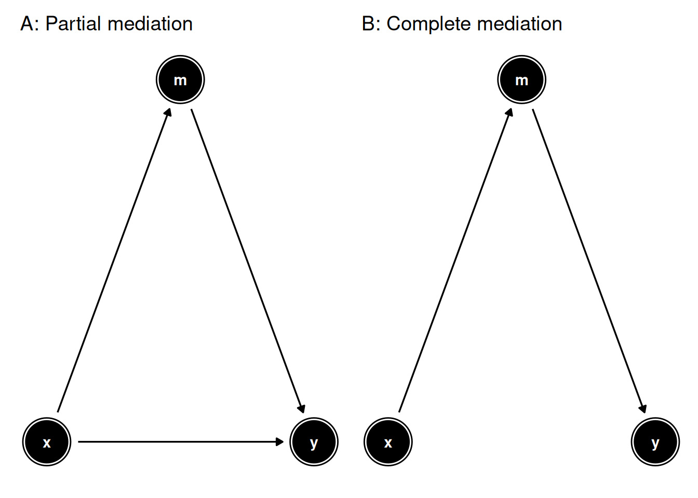
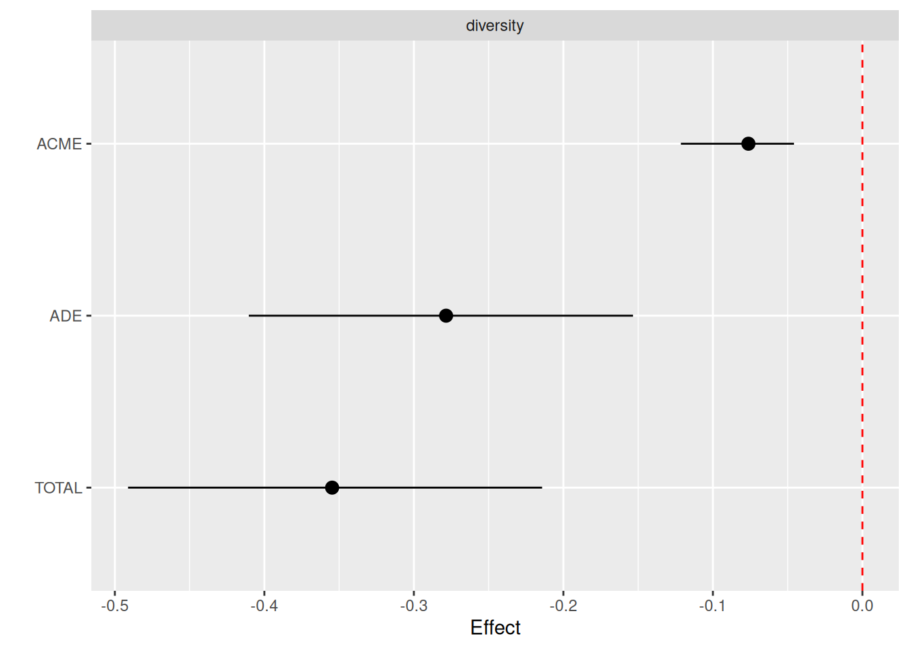
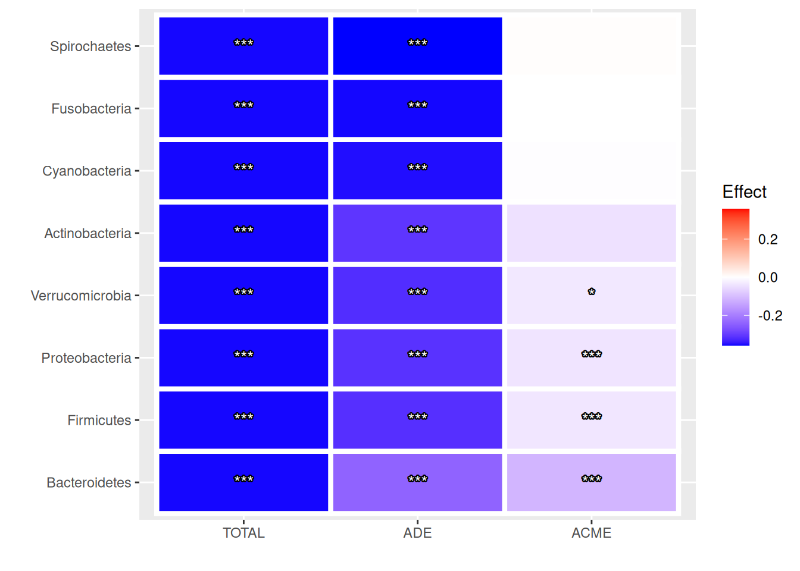
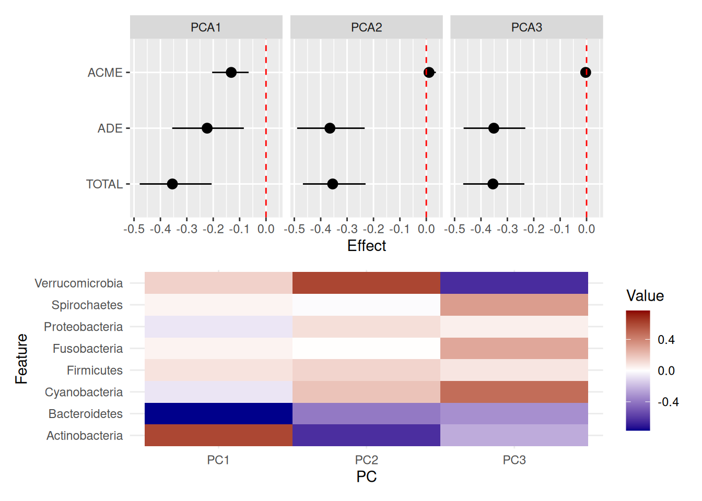

18 Mediation
Mediation analysis is used to study the effect of an exposure variable (X) on the outcome (Y) through a third factor, known as mediator (M). In statistics, this relationship can be described as follows:
\[ Y \thicksim X * M \]
The contribution of a mediator is typically quantified in terms of Average Causal Mediated Effect (ACME), that is, the portion of the association between X and Y that is explained by M. In practice, this corresponds to the difference between the Total Effect (TE) and the Average Direct Effect (ADE):
\[ ACME = TE - ADE \]
The microbiome can mediate the effects of multiple environmental stimuli on human health. However, the importance of its role as a mediator depends on the nature of the stimulus. For example, the effect of dietary fiber intake on host behavior is largely mediated by the gut microbiome (Logan and Jacka 2014). In contrast, the indirect impact of antibiotic use on mental health through an altered microbiome represents a more subtle process (Dinan and Dinan 2022).
In general, the wide range of mediation effects can be divided into two classes:
- partial mediation, where the mediator assists the exposure variable in conveying only part of the effect on the outcome
- complete mediation, where the mediator conveys the full effect of the the exposure variable on the outcome

Mediation analysis is based on the assumption that the exposure variable, the mediator and the outcome follow one another in this temporal sequence. Therefore, investigating mediation is a suitable analytical choice in longitudinal studies, whereas it is discouraged in cross-sectional ones (Fairchild and McDaniel 2017).
We demonstrate a standard mediation analysis with the hitchip1006 dataset from the miaTime package, which contains a genus-level assay for 1006 Western adults of 6 different nationalities.
In our analyses, nationality and BMI group will represent the exposure (X) and outcome (Y) variables, respectively. We make the broad assumption that nationality reflects differences in the living environment between subjects.
# Convert BMI variable to numeric
tse$bmi_group <- as.numeric(tse$bmi_group)
# Agglomerate features by phylum
tse <- agglomerateByRank(tse, rank = "Phylum")
# Apply clr transformation to counts assay
tse <- transformAssay(
tse,
method = "clr",
pseudocount = 1
)In the following examples, the effect of living environment on BMI mediated by the microbiome is investigated in three different steps:
- global contribution by alpha diversity
- individual contributions by assay features
- joint contributions by reduced dimensions
18.1 Alpha diversity as mediator
First, we ask whether alpha diversity mediates the effect of living environment on BMI. Using the getMediation function, the variables X, Y and M are specified with the arguments treatment, outcome and mediator, respectively. We control for sex and age and limit comparisons to two nationality groups, Central Europeans (control) vs. Scandinavians (treatment).
# Analyse mediated effect of nationality on BMI via alpha diversity
# 100 permutations were done to speed up execution, but ~1000 are recommended
med_df <- getMediation(
tse,
treatment = "nationality",
outcome = "bmi_group",
mediator = "diversity",
covariates = c("sex", "age"),
treat.value = "Scandinavia",
control.value = "CentralEurope",
boot = TRUE, sims = 100
)
# Plot results as a forest plot
plotMediation(med_df, layout = "forest")
The forest plot above shows significance for both ACME and ADE, which suggests that alpha diversity is a partial mediator of living environment on BMI. In contrast, if ACME but not ADE were significant, complete mediation would be inferred. The negative sign of the effect means that a lower BMI and alpha diversity are associated with the control group (Scandinavians).
18.2 Assay features as mediators
If we suspect that only certain features of the microbiome act as mediators, we can estimate their individual contributions by fitting one model for each feature in a selected assay. As multiple tests are performed, it is good practice to correct the significance of the findings with a method of choice to adjust p-values.
# Analyse mediated effect of nationality on BMI via clr-transformed features
# 100 permutations were done to speed up execution, but ~1000 are recommended
tse <- addMediation(
tse,
name = "assay_mediation",
treatment = "nationality",
outcome = "bmi_group",
assay.type = "clr",
covariates = c("sex", "age"),
treat.value = "Scandinavia",
control.value = "CentralEurope",
boot = TRUE, sims = 100,
p.adj.method = "fdr"
)
# View results
kable(metadata(tse)$assay_mediation)| mediator | acme | acme_pval | acme_lower | acme_upper | ade | ade_pval | ade_lower | ade_upper | total | total_lower | total_upper | total_pval | acme_padj | ade_padj | total_padj | |
|---|---|---|---|---|---|---|---|---|---|---|---|---|---|---|---|---|
| 2 | Bacteroidetes | -0.1130 | 0.00 | -0.1706 | -0.0573 | -0.2417 | 0 | -0.3945 | -0.0478 | -0.3547 | -0.4899 | -0.1901 | 0 | 0.00 | 0 | 0 |
| 4 | Firmicutes | -0.0378 | 0.00 | -0.0786 | -0.0120 | -0.3168 | 0 | -0.4777 | -0.1757 | -0.3547 | -0.5216 | -0.2205 | 0 | 0.00 | 0 | 0 |
| 6 | Proteobacteria | -0.0411 | 0.00 | -0.0870 | -0.0128 | -0.3136 | 0 | -0.4653 | -0.1722 | -0.3547 | -0.4959 | -0.2093 | 0 | 0.00 | 0 | 0 |
| 8 | Verrucomicrobia | -0.0345 | 0.02 | -0.0665 | -0.0077 | -0.3201 | 0 | -0.4621 | -0.1457 | -0.3547 | -0.5070 | -0.1671 | 0 | 0.04 | 0 | 0 |
| 1 | Actinobacteria | -0.0458 | 0.10 | -0.1059 | 0.0083 | -0.3088 | 0 | -0.4443 | -0.1675 | -0.3547 | -0.4783 | -0.2279 | 0 | 0.16 | 0 | 0 |
| 3 | Cyanobacteria | -0.0037 | 0.64 | -0.0271 | 0.0169 | -0.3510 | 0 | -0.4932 | -0.2103 | -0.3547 | -0.4881 | -0.2188 | 0 | 0.76 | 0 | 0 |
| 5 | Fusobacteria | 0.0001 | 0.76 | -0.0204 | 0.0165 | -0.3547 | 0 | -0.5016 | -0.2083 | -0.3547 | -0.5105 | -0.2128 | 0 | 0.76 | 0 | 0 |
| 7 | Spirochaetes | 0.0034 | 0.76 | -0.0183 | 0.0228 | -0.3581 | 0 | -0.4783 | -0.2163 | -0.3547 | -0.4709 | -0.2124 | 0 | 0.76 | 0 | 0 |
For convenience, results can be visualized with a heatmap, where rows represent features and columns correspond to the coefficients for TE, ADE and ACME. Significant findings can be marked with p-values or stars.
# Plot results as a heatmap
plotMediation(
tse, "assay_mediation",
layout = "heatmap",
add.significance = "symbol"
)
Results suggest that only four out of eight features (Bacteroidetes, Firmicutes, Proteobacteria and Verrucomicrobia) partially mediate the effect of living environment on BMI. As the sign is negative, a smaller abundance of these mediators is found in Scandinavians compared to Central Europeans, which matches the negative trend of alpha diversity.
While analyses were conducted at the phylum level to simplify results, using original assays without agglomeration also represents a valid option. However, the increase in phylogenetic resolution also implies a higher probability of spurious findings, which in turn necessitates a stronger correction for multiple comparisons. A solution to this issue is proposed in the following section.
18.3 Reduced dimensions as mediators
Performing mediation analysis for each feature provides insight into individual contributions. However, this approach greatly increases the number of multiple tests to correct for and thus it reduces statistical power. To overcome this issue, it is possible to assess the joint contributions of groups of features by means of dimensionality reduction.
# Reduce dimensions with PCA
tse <- runPCA(
tse,
name = "PCA",
assay.type = "clr",
ncomponents = 3
)
# Analyse mediated effect of nationality on BMI via principal components
# 100 permutations were done to speed up execution, but ~1000 are recommended
tse <- addMediation(
tse,
name = "reddim_mediation",
treatment = "nationality",
outcome = "bmi_group",
dimred = "PCA",
covariates = c("sex", "age"),
treat.value = "Scandinavia",
control.value = "CentralEurope",
boot = TRUE, sims = 100,
p.adj.method = "fdr"
)
# View results
kable(metadata(tse)$reddim_mediation)| mediator | acme | acme_pval | acme_lower | acme_upper | ade | ade_pval | ade_lower | ade_upper | total | total_lower | total_upper | total_pval | acme_padj | ade_padj | total_padj |
|---|---|---|---|---|---|---|---|---|---|---|---|---|---|---|---|
| PCA1 | -0.1317 | 0.00 | -0.2040 | -0.0658 | -0.2230 | 0 | -0.3554 | -0.0840 | -0.3547 | -0.4785 | -0.2060 | 0 | 0.00 | 0 | 0 |
| PCA2 | 0.0104 | 0.24 | -0.0068 | 0.0363 | -0.3651 | 0 | -0.4894 | -0.2334 | -0.3547 | -0.4674 | -0.2300 | 0 | 0.36 | 0 | 0 |
| PCA3 | -0.0033 | 0.52 | -0.0150 | 0.0028 | -0.3514 | 0 | -0.4658 | -0.2321 | -0.3547 | -0.4673 | -0.2356 | 0 | 0.52 | 0 | 0 |
Results can be displayed as one forest plot for each reduced dimension. When combined with a heatmap of the feature loadings by dimension, it helps deduce whether certain groups of features act as mediators.
# Plot results as multiple forest plots
p1 <- plotMediation(
tse, "reddim_mediation",
layout = "forest"
)
# Plot loadings by principal component
p2 <- plotLoadings(
tse, "PCA",
ncomponents = 3, n = 8,
layout = "heatmap"
)
# Combine plots
p1 / p2
The plot above suggests that only PC1 partially mediates the effect of living environment on BMI. Within this dimension, Bacteroidetes and Actinobacteria are the largest contributors in opposite directions. Interestingly, in the previous section the former but not the latter appeared significant individually, which implies that mediation might emerge from their joint contribution.
18.4 Final remarks
This chapter introduced the concept of mediation and demonstrated a standard analysis of the microbiome as mediator at three different levels (global, individual and joint contributions). Importantly, the provided method is based on the mediation package and is limited to univariate comparisons and binary conditions for the exposure variable (Tingley et al. 2014). Therefore, it is recommended to reduce the number of mediators under study by means of a knowledge-based strategy to preserve statistical power.
A few methods for multivariate mediation analysis of high-dimensional omic data also exist (Xia 2021). However, no one solution has emerged yet to become the golden standard in microbiome data analysis, mainly because the available approaches can only partially accommodate for the specific properties of microbiome data, such as compositionality, sparsity and its hierarchical structure. While this chapter proposed a standard approach to mediation analysis, in the future fine-tuned solutions for the microbiome may also become common.